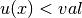
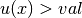

Export and view a solution¶
There are essentially four ways to view the result of getfem computations:
- Matlab, with the matlab-interface.
- The open-source Mayavi or any other VTK files viewer.
- The open-source OpenDX program.
- The open-source Gmsh program.
The objects that can be exported are, mesh, mesh_fem objects, and stored_mesh_slice.
Saving mesh and mesh_fem objects for the Matlab interface¶
If you have installed the Matlab interface, you can simply use mesh_fem::write_to_file and save the solution as a plain text file, and then, load them into Matlab. For example, supposing you have a solution U on a mesh_fem mf,:
std::fstream f("solution.U",std::ios::out);
for (unsigned i=0; i < gmm::vect_size(U); ++i)
f << U[i] << "\verb+\+n";
// when the 2nd arg is true, the mesh is saved with the |mf|
mf.write_to_file("solution.mf", true);
and then, under matlab:
>> U=load('solution.U');
>> mf=gfMeshFem('load','solution.mf');
>> gf_plot(mf,U,'mesh','on');
See the getfem-matlab interface documentation for more details.
Two other file formats are supported for export: the VTK file format, the OpenDX file format and the Gmsh post-processing file format. Both can export either a getfem::mesh or getfem::mesh_fem , but also the more versatile getfem::stored_mesh_slice.
Examples of use can be found in the examples of the tests directory.
Producing mesh slices¶
GetFEM++ provides “slicers” objects which are dedicated to generating post-treatment data from meshes and solutions. These slicers, defined in the file getfem/getfem_mesh_slicers.h take a mesh (and sometimes a mesh_fem with a solution field) on input, and produce a set of simplices after applying some operations such as intersection with a plane, extraction of the mesh boundary, refinement of each convex, extraction of isosurfaces, etc. The output of these slicers can be stored in a getfem::stored_mesh_slice object (see the file getfem/getfem_mesh_slice.h). A stored_mesh_slice object may be considered as a P1 discontinuous FEM on a non-conformal mesh with fast interpolation ability. Slices are made of segments, triangles and tetrahedrons, so the convexes of the original mesh are always simplexified.
All slicer operation inherit from getfem::slicer_action, it is very easy to create a new slicer. Example of slicers are (some of them use a getfem::mesh_slice_cv_dof_data_base which is just a reference to a mesh_fem mf and a field U on this mesh_fem).
- getfem::slicer_none()¶
empty slicer.
- getfem::slicer_boundary(const mesh &m, ldots)¶
extract the boundary of a mesh.
- getfem::slicer_apply_deformation(mesh_slice_cv_dof_data_base &)¶
apply a deformation to the mesh , the deformation field is defined on a mesh_fem.
- getfem::slicer_half_space(base_node x0, base_node n, int orient)¶
cut the mesh with a half space (if orient = -1 or +1), or a plane (if orient = 0), x0 being a node of the plane, and n being a normal of the plane.
- getfem::slicer_sphere(base_node x0, scalar_type R, int orient)¶
cut with the interior (orient``=-1), boundary (``orient``=0) or exterior (``orient``=+1) or a sphere of center ``x0 and radius R.
- getfem::slicer_cylinder(base_node x0, base_node x1, scalar_type R, int orient)¶
slice with the interior/boundary/exterior of a cylinder of axis (x0,x1) and radius R.
- getfem::slicer_isovalues(const mesh_slice_cv_dof_data_base& mfU, scalar_type val, int orient)¶
cut with the isosurface defined by the scalar field mfU and val. Keep only simplices where : (orient``=-1), :math:`u(x)=val` (``orient=0 or .
- getfem::slicer_mesh_with_mesh(const mesh& m2)¶
cut the convexes with the convexes of the mesh m2.
- getfem::slicer_union(const slicer_action &sA, const slicer_action &sB)¶
merges the output of two slicer operations.
- getfem::slicer_intersect(slicer_action &sA, slicer_action &sB)¶
intersect the output of two slicer operations.
- getfem::slicer_complementary(slicer_action &s)¶
return the complementary of a slicer operation.
- getfem::slicer_build_edges_mesh(mesh& edges_m)¶
slicer whose side-effect is to build the mesh edges_m with the edges of the sliced mesh.
- getfem::slicer_build_mesh(mesh &m)¶
in some (rare) occasions , it might be useful to build a mesh from a slice. Note however that there is absolutely no guaranty that the mesh will be conformal (although it is often the case).
- getfem::slicer_build_stored_mesh_slice(stored_mesh_slice& sl)¶
record the output of the slicing operation into a stored_mesh_slice object. Note that it is often more convenient to use the stored_mesh_slice::build(...) method to achieve the same result.
- getfem::slicer_explode(c)¶
shrink or expand each convex with respect to its gravity center.
In order to apply these slicers, a getfem::mesh_slicer(mesh&) object should be created, and the getfem::slicer_action are then stacked with mesh_slicer::push_back_action(slicer_action&) and mesh_slicer::push_front_action(slicer_action&). The slicing operation is finally executed with mesh_slicer::exec(int nrefine) (or mesh_slicer::exec(int nrefine, const mesh_region &cvlst) to apply the operation to a subset of the mesh, or its boundary etc.).
The nrefine parameter is very important, as the “precision” of the final result will depend on it: if the data that is represented on the final slice is just P1 data on convexes with a linear geometric transformation, nrefine = 1 is the right choice, but for P2, P3, non linear transformation etc, it is better to refine each convex of the original mesh during the slicing operation. This allows an accurate representation of any finite element field onto a very simple structure (linear segment/triangles/tetrahedrons with P1 discontinuous data on them) which is what most visualization programs (gmsh, mayavi, opendx, matlab, etc.) expect.
Example of use (cut the boundary of a mesh m with a half-space, and save the result into a stored_mesh_slice):
getfem::slicer_boundary a0(m);
getfem::slicer_half_space a1(base_node(0,0), base_node(1, 0), -1);
getfem::stored_mesh_slice sl;
getfem::slicer_build_stored_mesh_slice a2(sl);
getfem::mesh_slicer slicer(m);
slicer.push_back_action(a1);
slicer.push_back_action(a2);
int nrefine = 3;
slicer.exec(nrefine);
In order to build a getfem::stored_mesh_slice object during the slicing operation, the stored_mesh_slice::build() method is often more convenient than using explicitly the slicer_build_stored_mesh_slice slicer:
getfem::stored_mesh_slice sl;
sl.build(m, getfem::slicer_boundary(m),
getfem::slicer_half_space(base_node(0,0), base_node(1, 0), -1),
nrefine);
The simplest way to use these slices is to export them to VTK, OpenDX, or Gmsh. The file getfem/getfem_export.h contains three classes: getfem::vtk_export, getfem::dx_export and getfem::pos_export.
Exporting mesh, mesh_fem or slices to VTK¶
First, it is important to know the limitation of VTK data files: each file can contain only one mesh, with at most one scalar field and one vector field and one tensor field on this mesh (in that order). VTK files can handle data on segment, triangles, quadrangles, tetrahedrons and hexahedrons. Although quadratic triangles, segments etc are said to be supported, it is just equivalent to using nrefine=2 when building a slice. VTK data file do support meshes with more than one type of element (i.e. meshes with triangles and quadrangles, for example).
For example, supposing that a stored_mesh_slice sl has already been built:
// an optional the 2nd argument can be set to true to produce
// a text file instead of a binary file
vtk_export exp("output.vtk");
exp.exporting(sl); // will save the geometrical structure of the slice
exp.write_point_data(mfp, P, "pressure"); // write a scalar field
exp.write_point_data(mfu, U, "displacement"); // write a vector field
In this example, the fields P and U are interpolated on the slice nodes, and then written into the VTK field. The vector fields should always be written after the scalar fields (and the tensor fields should be written last).
It is also possible to export a mesh_fem without having to build a slice:
// an optional the 2nd argument can be set to true to produce
// a text file instead of a binary file
vtk_export exp("output.vtk");
exp.exporting(mfu);
exp.write_point_data(mfp, P, "pressure"); // write a scalar field
exp.write_point_data(mfu, U, "displacement"); // write a vector field
Note however that with this approach, the vtk_export will map each convex/fem of mfu to a VTK element type. As VTK does not handle elements of degree greater than 2, there will be a loss of precision for higher degree FEMs.
Exporting mesh, mesh_fem or slices to OpenDX¶
The OpenDX data file is more versatile than the VTK one. It is able to store more that one mesh, any number of fields on these meshes etc. However, it does only handle elements of degree 1 and 0 (segments, triangles, tetrahedrons, quadrangles etc.). And each mesh can only be made of one type of element, it cannot mix triangles and quadrangles in a same object. For that reason, it is generally preferable to export getfem::stored_mesh_slice objects (in which non simplex elements are simplexified, and which allows refinement of elements) than getfem::mesh_fem and getfem::mesh objects.
The basic usage is very similar to getfem::vtk_export:
getfem::dx_export exp("output.dx");
exp.exporting(sl);
exp.write_point_data(mfu, U, "displacement");
Moreover, getfem::dx_export is able to reopen a ‘.dx’ file and append new data into it. Hence it is possible, if many time-steps are to be saved, to view intermediate results in OpenDX during the computations. The prototype of the constructor is:
dx_export(const std::string& filename, bool ascii = false, bool append = false);
dx_export(std::ostream &os_, bool ascii = false);
An example of use, with multiple time steps (taken from tests/dynamic_friction.cc):
getfem::stored_mesh_slice sl;
getfem::dx_export exp("output.dx", false);
if (N <= 2) sl.build(mesh, getfem::slicer_none(),4);
else sl.build(mesh, getfem::slicer_boundary(mesh),4);
exp.exporting(sl,true);
// for each mesh object, a corresponding ``mesh'' object will be
// created in the data file for the edges of the original mesh
exp.exporting_mesh_edges();
while (t <= T) {
...
exp.write_point_data(mf_u, U0);
exp.serie_add_object("deformation");
exp.write_point_data(mf_vm, VM);
exp.serie_add_object("von_mises_stress");
}
In this example, an OpenDX “time series” is created, for each time step, two data fields are saved: a vector field called “deformation”, and a scalar field called “von_mises_stress”.
Note also that the dx_export::exporting_mesh_edges() function has been called. It implies that for each mesh exported, the edges of the original mesh are also exported (into another OpenDX mesh). In this example, you have access in OpenDX to 4 data fields: “deformation”, “deformation_edges”, “von_mises_stress” and “von_mises_stress_edges”.
The tests/dynamic_friction.net is an example of OpenDX program for these data (run it with cd tests; dx -edit dynamic_friction.net , menu “Execute/sequencer”).

目次
前のトピックへ
次のトピックへ
Download
Main documentations
- GetFEM++ User documentation
- Python Interface
- Matlab Interface
- Scilab Interface
- Gmm++
- GetFEM++ project